تووا · اختبار حيّ شامل لتجربة العميل
أربعة وكلاء اختبار مستقلّون قادوا متصفّحًا حقيقيًّا ضدّ نسخة tawalocal الحيّة، نفّذوا كل زر وكل مسار وكل سيناريو دفع ممكن للعميل، وتحقّقوا من كل نتيجة مباشرة في قاعدة البيانات — لا افتراض، ولا اكتفاء بما تعرضه الواجهة.
كل المسارات الجوهريّة (تسجيل، طلب، دفع بكل طرقه، تتبّع، تقييم، محفظة) تعمل فعليًّا وتحفظ بيانات صحيحة في قاعدة البيانات. لكن الاختبار كشف 26 نتيجة حقيقيّة — أبرزها أنّ نظام أكواد الخصم معطَّل كليًّا وبصمت تامّ (لا خصم، ولا رسالة خطأ) في كل سيناريو جُرِّب، وأنّ مشاكل الترجمة (i18n) هي النمط الأكثر تكرارًا عبر المجالات الأربعة.
لكل نتيجة أدناه دليل ملموس — استعلام قاعدة بيانات، رمز استجابة HTTP، رسالة console، أو لقطة شاشة — وليس انطباعًا.
كل وكيل قاد Chromium فعليًّا عبر أدوات Playwright (نقر، كتابة، تنقّل، لقطات شاشة) ضدّ الخادم الحيّ http://127.0.0.1:8080 على tawalocal.
بعد كل إجراء (إضافة للسلّة، دفع، إلغاء، تقييم)، استعلمنا tawalocal-postgres-1 مباشرة للتأكّد أنّ ما ظهر على الشاشة يطابق الصفوف الفعليّة في الجداول.
لتحريك طلب عبر حالاته الحقيقيّة (قبول المطعم، تعيين سائق، التسليم)، استُخدِمت استدعاءات API حقيقيّة موثّقة بحسابات OPS/سائق فعليّة — لا تلاعب مباشر بقاعدة البيانات إلا عند غياب مسار API/واجهة معقول، وذلك موثَّق صراحةً حيثما حدث.
المجالات الأربعة نُفِّذت الواحدة تلو الأخرى عمدًا (لا بالتوازي) لأنّ حالة حساب عميل واحد (رصيد المحفظة، سجلّ الطلبات) تؤثّر على المجال التالي.
إجمالي استدعاءات الأدوات الفعليّة عبر الوكلاء الأربعة: 1,135 (297 + 342 + 309 + 187) — مدّة تنفيذ إجماليّة نحو 4.4 ساعة من الاختبار الحيّ المتواصل.
أربعة مجالات متتابعة، كل واحد بوكيله المستقلّ وحسابه الاختباريّ الخاصّ.
تسجيل، دخول، نسيان كلمة المرور، دفتر العناوين، الإعدادات، اللغة، الإشعارات، حذف الحساب، الصفحات القانونيّة.
البحث، تصفّح الفئات، صفحة المزوّد، السلّة وأكواد الخصم، الدفع بكل طرقه، طلب مجموعة (تجميع متاجر)، طلب مجدوَل، استلام ذاتيّ.
التتبّع الحيّ، الإلغاء، سجلّ الطلبات، التقييمات، محادثة الدعم، حالات استثناء الدفع النقديّ وعدم حضور العميل.
رصيد المحفظة، الشحن، سجلّ العمليّات، التحويل بين المستخدمين، نقاط الولاء، الإحالة، أكواد الخصم في الدفع.
| المجال | حرجة | عالية | متوسّطة | منخفضة | الإجمالي |
|---|---|---|---|---|---|
| الهويّة والحساب | 0 | 1 | 7 | 3 | 11 |
| التصفّح والطلب | 0 | 1 | 4 | 1 | 6 |
| دورة حياة الطلب | 0 | 2 | 2 | 2 | 6 |
| المحفظة والولاء | 1 | 0 | 1 | 0 | 2 |
| ملاحظة | بعض النتائج ظهرت بشكل مستقلّ في أكثر من مجال (خطّ عربيّ تالف، ترجمة الصفحة الرئيسيّة المكسورة، فشل كود الخصم) — دُمِجت في نتيجة واحدة أدناه مع الإشارة لكل مصدر تأكيد. | ||||
الأولى بالمعالجة قبل أي تجربة تشمل عملاء حقيقيّين أو أموالًا حقيقيّة.
مهما كتب العميل كود خصم — صحيح، منتهي، غير صالح، أو دون الحدّ الأدنى للطلب — لا يحدث أي شيء: لا خصم، ولا رسالة تشرح السبب. العميل يدفع السعر الكامل دون أن يعرف لماذا لم يُطبَّق الكود.
مجال "التصفّح والطلب" جرَّب كود QATESTVALID (خصم 10٪ نشط، شامل، بلا قيود) على طلب حقيقيّ — النداء GET /orders/promotion-quote أعاد {"discount_minor": 0}، والطلب اكتمل بالسعر الكامل (discount_minor=0، promotion_id=NULL) دون أي تنبيه. مجال "المحفظة" اختبر سبع حالات مختلفة بشكل منهجيّ (كود صالح، منتهي، بمبلغ ثابت، بحدّ أدنى — فوقه وتحته، ومقيَّد بمزوّد — مطابق وغير مطابق) — كلّها أعادت نفس الكائن الفارغ تمامًا. السبب الجذريّ: settings.promotions_enabled = False في backend/app/config.py:455، وهو مفتاح تطبيق منفصل عن أعلام FIN-COR المختومة، يُسكِت المسار بالكامل لكل عميل.
المشكلة ليست فقط أنّ الميزة معطَّلة — بل أنّ الاستجابة نفسها لا تحمل أي سبب. حتى بعد تفعيل المفتاح مستقبلًا، كود منتهي أو غير مؤهَّل سيفشل بنفس الصمت التامّ الذي يفشل به اليوم كود صحيح 100٪. هذا يعني عدم وجود أي قناة لتشخيص فشل مستقبليّ لكود بعينه، وليس فقط غياب الميزة حاليًّا.
الضغط على زرّ إفراغ السلّة كاملةً لا يُحدِث أي تغيير — لا نافذة تأكيد، لا حذف، لا أي استجابة. حذف عنصر واحد بأيقونة سلّة المهملات يعمل بشكل صحيح، فالعطل مقصور على الزرّ الجماعيّ فقط.
لا حوار تأكيد، لا طلب شبكة، وlocalStorage (toowa_cart:<userId>) بقي دون تغيير قبل الضغط وبعده تمامًا.
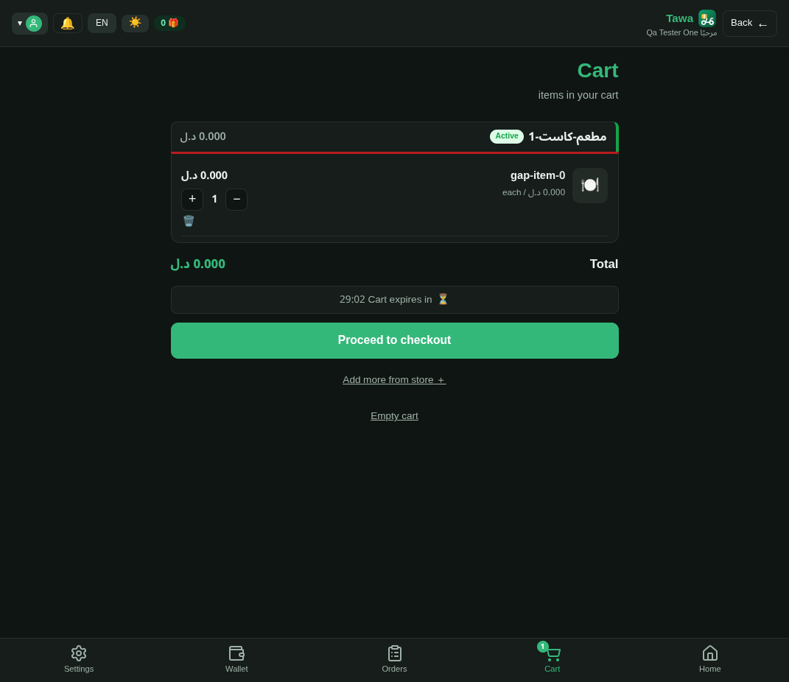
عميل اختار الإنجليزيّة كلغة للتطبيق، لكن عند حدوث خطأ (كلمة مرور خاطئة، حساب مكرَّر) تظهر له الرسالة بالعربيّة دون أي علاقة باختياره.
اختُبِر ذلك على تسجيل الدخول، التسجيل (هاتف/بريد مكرَّر)، ونسيان كلمة المرور — جميعها أظهرت النصّ العربيّ رغم أنّ استجابة الخادم كانت تحتوي أيضًا على message_en الصحيحة (مثال: message_en: "Could not create account..." ظهرت رسالة عربيّة بدلًا منها). السبب: نمط envelope?.message_ar ?? envelope?.message_en ?? t(...) يُفضِّل العربيّة دائمًا أوّلًا، مُكرَّر في 43 موضعًا عبر web/src (تأكَّد بـgrep).
سائق جديد يسجّل رقم لوحة مركبته بنفسه عبر النموذج العاديّ — لكن نظام الموافقة على انضمامه يتحقّق من حقل مختلف تمامًا لا توجد وسيلة له لتعبئته بنفسه. النتيجة: يُرفَض طلبه دائمًا بسبب "بيانات ناقصة" لا يستطيع إصلاحها، ولا يعرف OPS تلقائيًّا أنّ عليه التدخّل.
PUT /drivers/me/identity (الخدمة الذاتيّة) يكتب في Driver.vehicle_plate، بينما موافقة OPS (_activate_onboarding_role في operations_router.py:3047) تتحقّق من عمود مختلف كليًّا: DriverVehicleProfile.plate_number، وهو حقل بلا أي مسار خدمة ذاتيّة للكتابة فيه إطلاقًا. أُعيد إنتاج المشكلة حيًّا: سائق جديد سُجِّل، مُلِئ vehicle_plate، ثم رُفِضت الموافقة برسالة "PLATE_NUMBER" ناقصة — لا يُصلِحها إلا OPS يدويًّا عبر PATCH /operations/drivers/{id}/vehicle، وفقط إن عرف OPS أصلًا أنّ عليه فعل ذلك.
عندما يبلّغ السائق أنّ العميل لا يستطيع الدفع نقدًا، لا يتغيّر شيء على شاشة تتبّع العميل إطلاقًا — يبقى الطلب معلَّقًا دون أي تفسير. والأسوأ: هذا الطلب لا يظهر حتى في شاشة "الطلبات العالقة" التي يراقبها فريق العمليّات، فيصبح غير مرئيّ للطرفين معًا.
طلب حقيقيّ (166fc9a8-...) وصل لحالة ARRIVED_AT_DESTINATION، ثم فُتِح استثناء CUSTOMER_CANT_PAY حقيقيّ عبر POST /driver/cash-exceptions. شاشة تتبّع العميل لم تتغيّر إطلاقًا. حتى بعد حلّ الاستثناء من OPS (RESCHEDULED)، بقيت حالة الطلب عالقة على ARRIVED_AT_DESTINATION إلى الأبد، ولم يظهر إطلاقًا ضمن GET /operations/orders/stuck (تأكَّد أنّ هذا المسار يراقب حالة NO_DRIVER_ESCALATION فقط). ملاحظة بيئيّة إضافيّة: طابور استثناءات النقد يحتوي فعليًّا على 10 استثناءات مفتوحة سابقة منذ أواخر يونيو دون حلّ — ما يشير لعدم متابعة هذا الطابور عمليًّا.
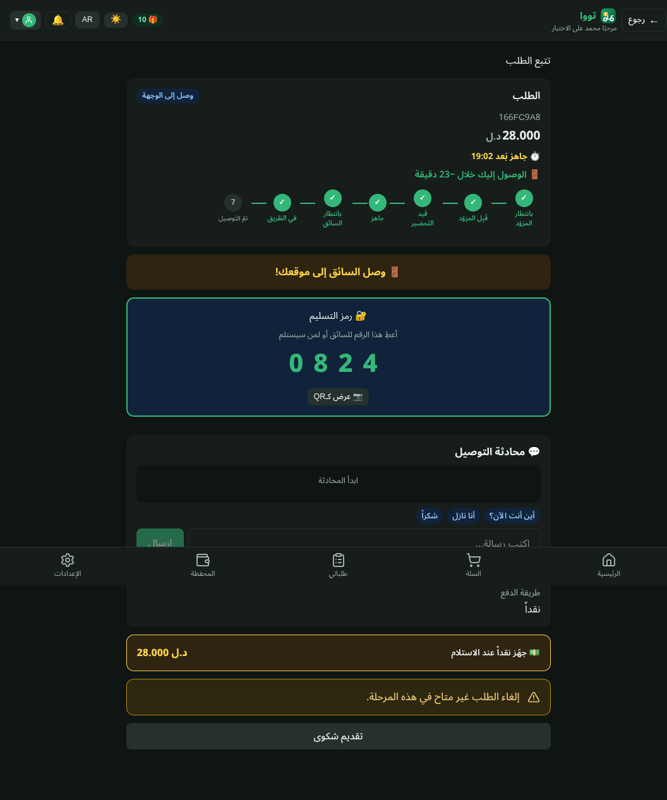
عندما لا يقبل أي سائق الطلب، تظهر للعميل نفس اللحظة رسالتان متناقضتان: زرّ إلغاء فعّال يقول "لن يُخصَم منك شيء"، وتنبيه تحته مباشرة يقول "الإلغاء غير متاح في هذه المرحلة". هذا التناقض قد يمنع عميلًا محقًّا في الإلغاء من الضغط على الزرّ أصلًا.
الزرّ فعليًّا يعمل بأمان (POST /orders/.../cancel ← 200، الحالة في قاعدة البيانات أصبحت CANCELLED_BY_CUSTOMER) — المشكلة في الرسالة المتناقضة فقط، لا في سلامة العمليّة نفسها.
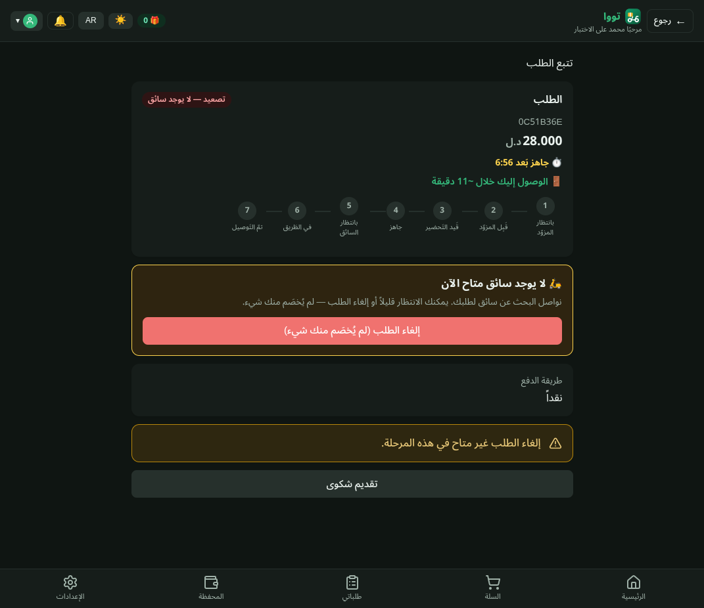
لا تُوقِف تشغيلًا ولا تُهدِّد مالًا مباشرة، لكنّها تُضعِف الثقة أو تُنتِج بيانات غير دقيقة.
كل تبويبات وحقول أداة اختيار العنوان (📍/🗺️/🔢/✍) عربيّة دائمًا مهما كانت لغة الواجهة، بينما الحقول المجاورة (اسم العنوان، الوصف) تُترجَم بشكل صحيح — العطل مقصور على هذا المكوِّن تحديدًا.
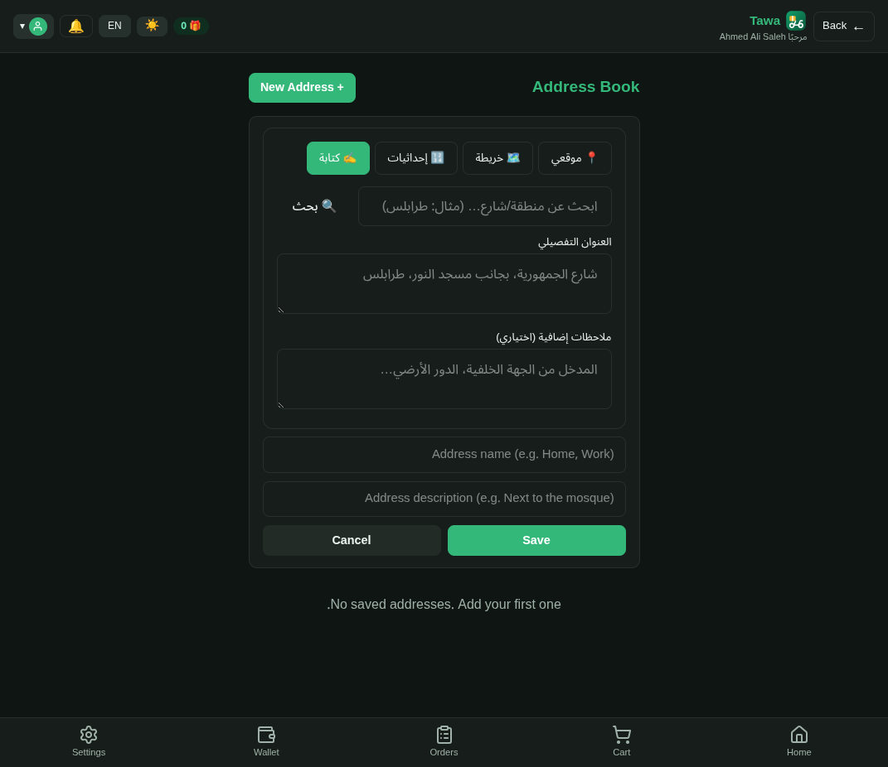
النقر على نقطة بالخريطة يعيد 404 من /api/geo/reverse (لا مزوّد جغرافيّ مُفعَّل في هذه البيئة) وتتراجع الواجهة لعرض الإحداثيات الخام فقط دون أي رسالة تشرح للعميل لماذا لم يظهر اسم العنوان. جزء من المشكلة بيئيّ (لا Nominatim منشور محليًّا)، لكن غياب أي تفسير للمستخدم فجوة حقيقيّة بصرف النظر عن البيئة.
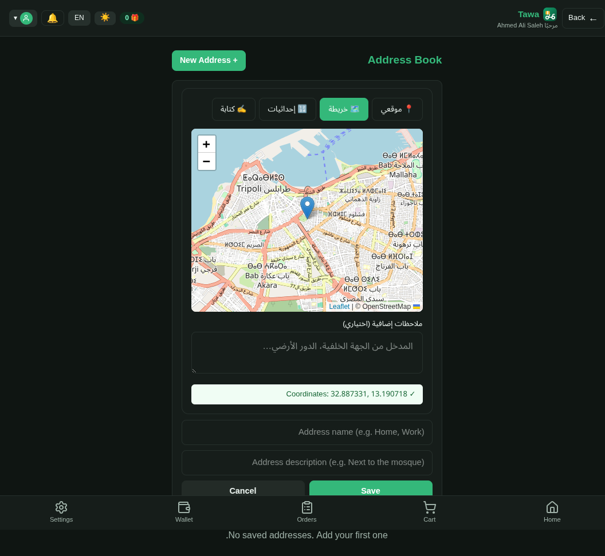
تسجيل بهاتف "12345" (5 أرقام فقط، ليس رقمًا ليبيًّا صالحًا) نجح دون أي رفض من العميل أو الخادم — تأكَّد في قاعدة البيانات: phone='12345' محفوظ حرفيًّا.
نتيجة مباشرة للنتيجة السابقة: رقم "12345" يظهر في شاشة تأكيد الحذف كـ"12345****" — أي الرقم الحقيقيّ كاملًا دون أي إخفاء فعليّ، بعكس صفحة "البحث عن رقم" التي تستخدم نمط إخفاء أكثر أمانًا (****2345). نمطا إخفاء مختلفان في نفس الكود يستحقّان التوحيد.
إشعار حقيقيّ غير مقروء أُدرِج مباشرة في قاعدة البيانات، وتصفّح المستخدم عدّة صفحات أخرى دون زيارة صندوق الوارد — أيقونة الجرس بقيت بلا أي شارة عدد، لا يكتشف المستخدم وجود إشعار جديد إلا بفتح الصندوق يدويًّا. تأكَّد أنّ Layout.tsx لا يحتوي أي منطق جلب/عرض عدد غير مقروء لهذه الأيقونة (بعكس شارة السلّة الموجودة فعليًّا).
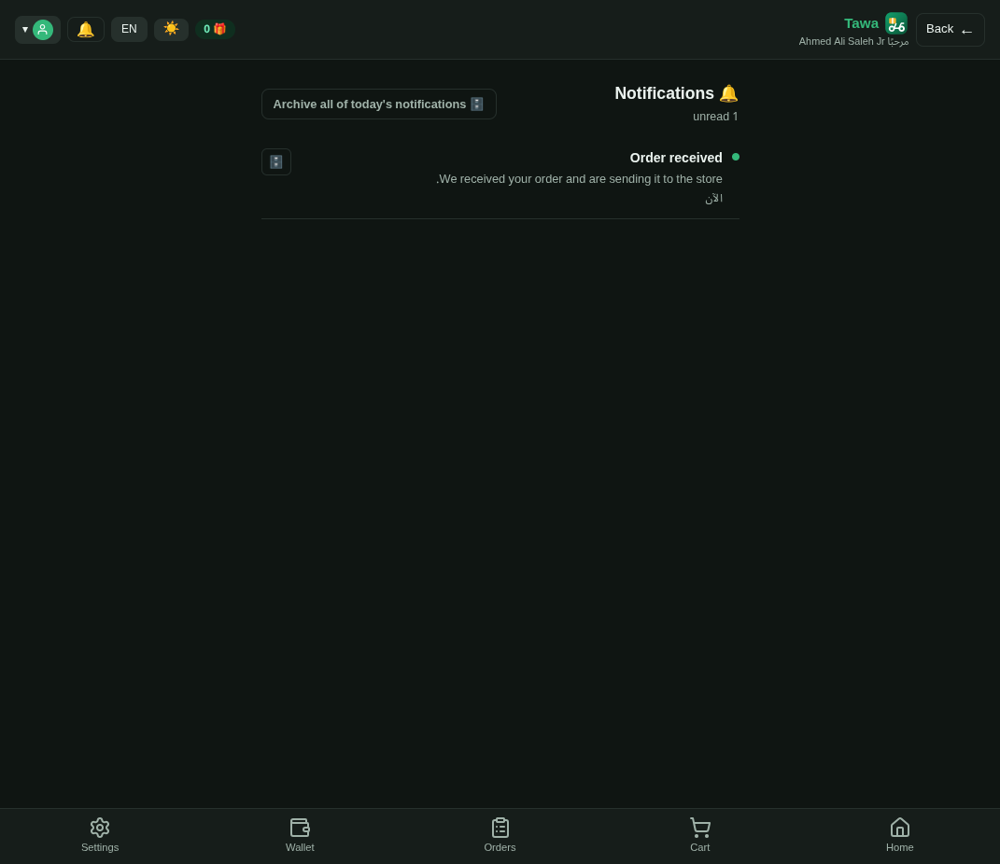
تبديل اللغة عبر زرّ الرأس السريع يُغيّر واجهة الجلسة فقط (users.locale_preference بقي NULL في قاعدة البيانات)، بينما الحفظ عبر /account/locale فقط يكتب القيمة فعليًّا على الحساب. قد يكون هذا تصميمًا مقصودًا (تبديل سريع محليّ مقابل إعداد دائم)، لكنّه غير موثَّق للمستخدم وقد يُفاجئه عند تسجيل الدخول من جهاز آخر.
تأكَّد غياب الترجمة (بفحص en.json/fr.json مباشرة، لا مجرّد المشاهدة) في: زرّ إظهار/إخفاء كلمة المرور (يظهر بكل مكان بالتطبيق)، قسم تعديل اسم الظهور بالإعدادات، مشاركة الموقع الحيّ، قائمة "المحظورون"، صفحة دفتر العناوين (الشارة الافتراضيّة، رمز الموقع)، حوار تأكيد الحذف الأصليّ للمتصفّح، مركز الشؤون القانونيّة بالكامل (كل عناوينه ومحتواه — مع أنّ المحتوى نفسه حقيقيّ وجوهريّ لا نصًّا مؤقّتًا)، ومصفوفة تفضيلات الإشعارات كاملة. زرّ الحفظ في صفحة إعدادات اللغة نفسها يبقى "حفظ" حتى بعد اختيار الإنجليزيّة — مفارقة لافتة تحديدًا في هذه الصفحة.
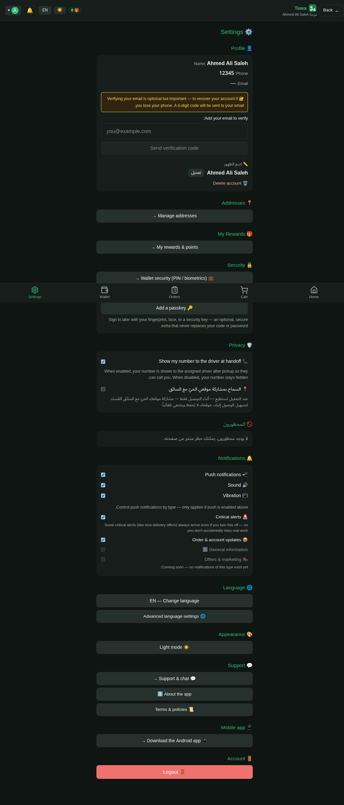
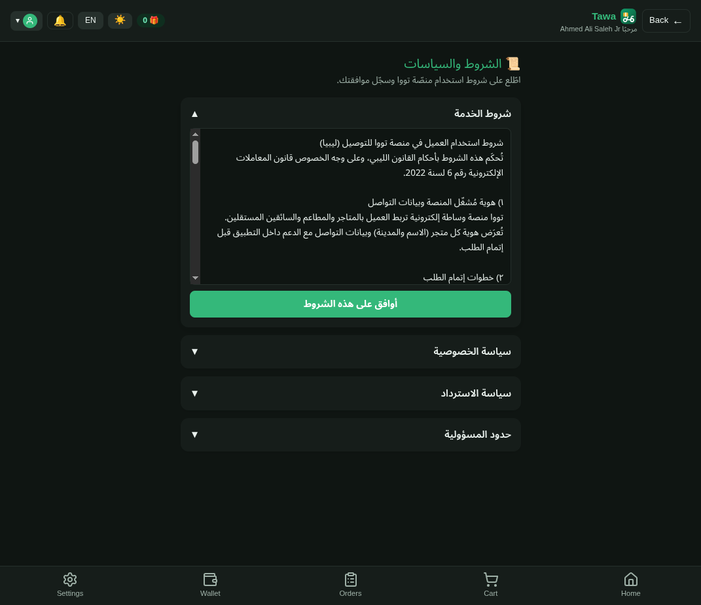
عنصر في قائمة أحد المطاعم متغيّره الوحيد "مؤرشَف" (غير متاح فعليًّا)، لكن الواجهة عرضته وكأنّه متاح بسعر صفر. حاول العميل إتمام الشراء فوصل حتى شاشة الدفع، لكن الخادم رفض الطلب في اللحظة الأخيرة (422) — أي لا يوجد استغلال ماليّ فعليّ، لكنّ الواجهة لم يكن يجب أن تعرض هذا العنصر أصلًا.
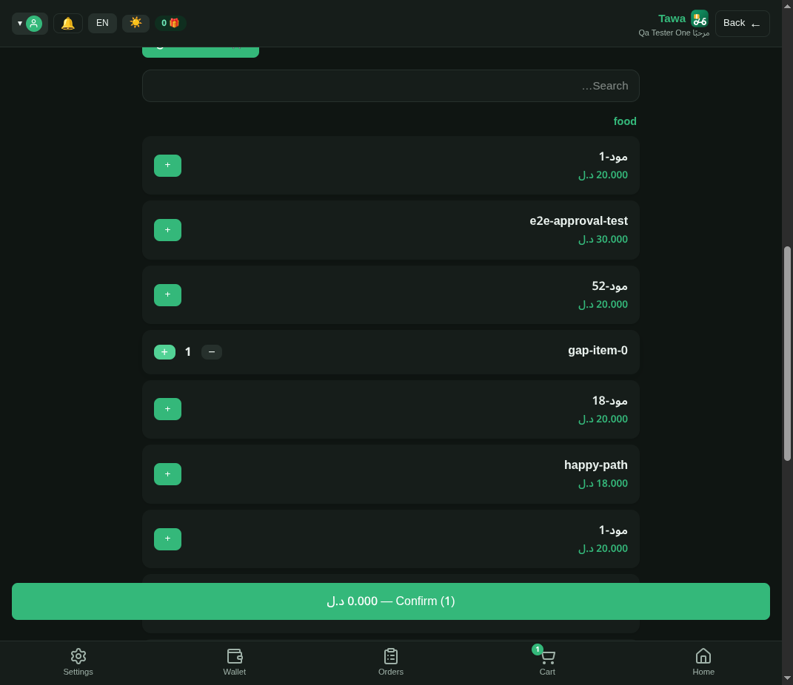
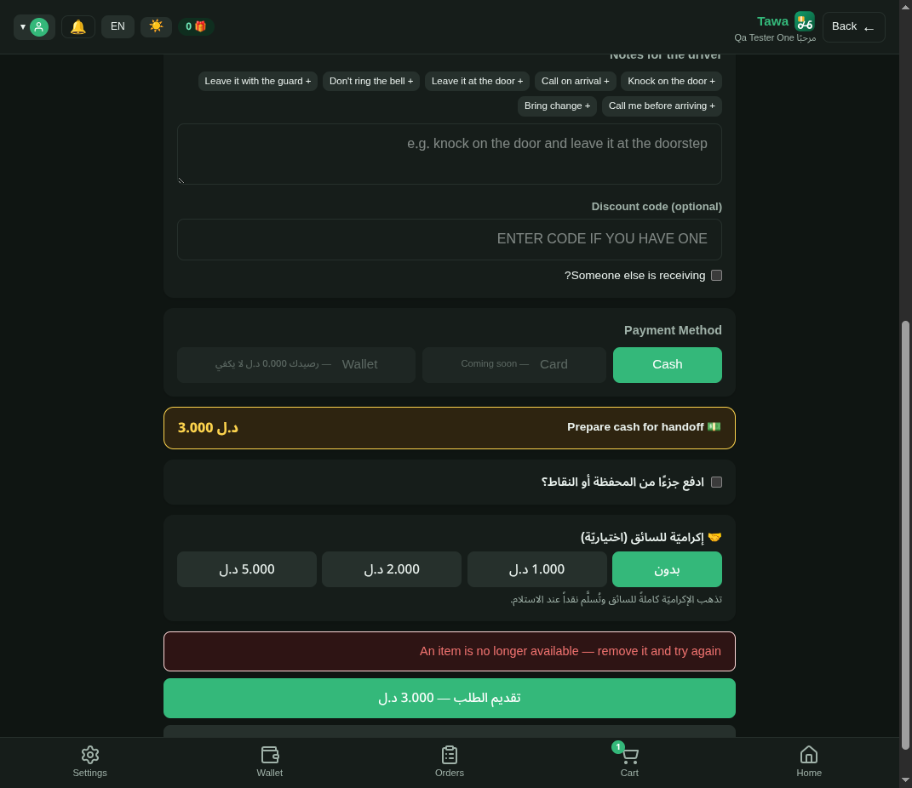
النصّ التوضيحيّ "ابحث عن مطعم أو صنف..." يعِد ببحث الأصناف أيضًا، لكن البحث عن "بيتزا" (صنف حقيقيّ منشور فعليًّا) أعاد "لا توجد نتائج" — GET /api/providers/search?q=... يبحث في أسماء المزوّدين فقط. البحث عن الأصناف موجود فعليًّا لكن فقط عبر صفحة تصفّح الفئة المنفصلة، غير المرتبطة بمربّع البحث.
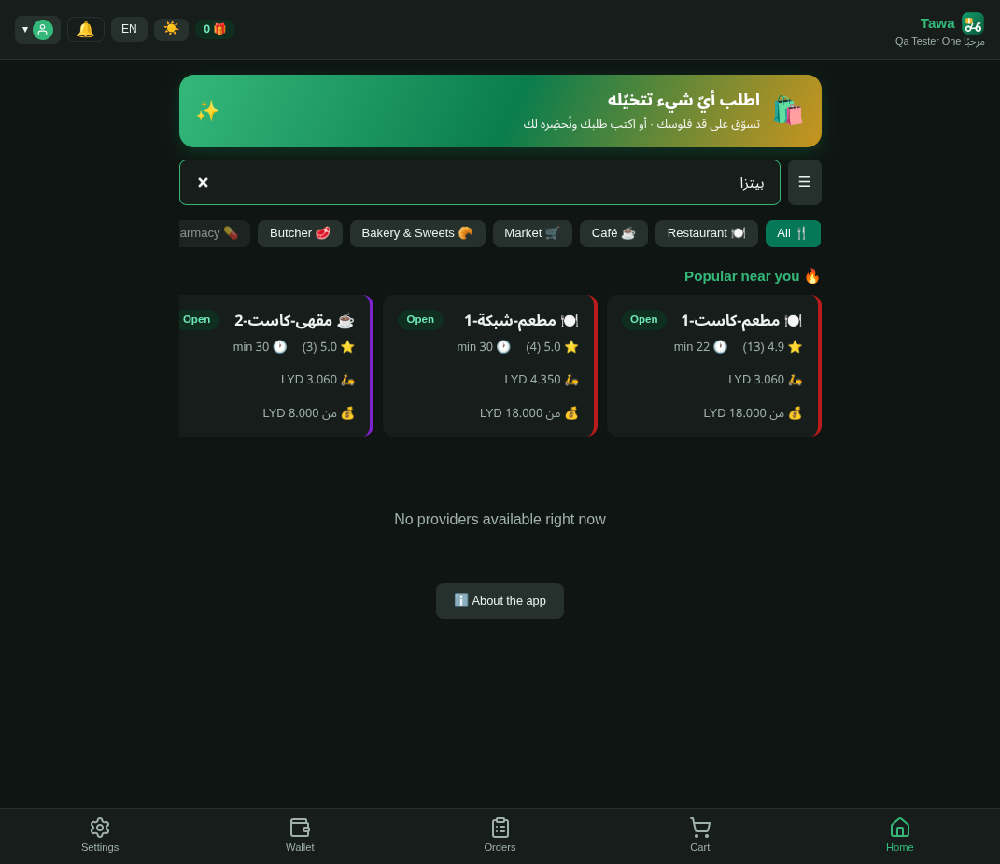
زرّ يحمل تسمية "EN" (يوحي بالتبديل للإنجليزيّة) انتقل مباشرة للفرنسيّة الكاملة من صفحة عربيّة. السبب الجذريّ في web/src/components/Layout.tsx:57: سلسلة مقارنة صارمة i18n.language === "ar" ? "en" : i18n.language === "en" ? "fr" : "ar" تسقط مباشرة إلى "fr" إن لم تكن القيمة الحاليّة بالضبط السلسلة "ar" (مثلًا "ar-LY" من كشف المتصفّح التلقائيّ).
بعد إتمام طلب "استلام ذاتيّ" فعليًّا (تأكَّد في قاعدة البيانات: fulfillment_type=SELF_PICKUP، address_id=NULL)، شاشة النجاح ما زالت تقول "أعطِ هذا الرقم للسائق" و"جهِّز المبلغ نقدًا لتسليمه للسائق" — رغم عدم وجود أي سائق في مسار الاستلام الذاتيّ.
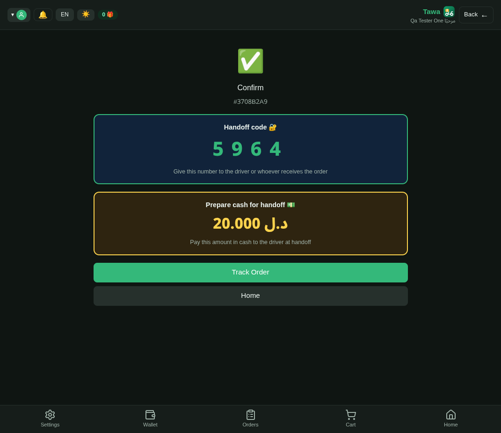
صفحة تفاصيل الطلب تُخفي نموذج التقييم بشكل صحيح بعد التقييم، لكنّ صفحة سجلّ الطلبات تحتوي نافذة تقييم ثانية منفصلة تبقى نشطة على الطلبات المُقيَّمة سابقًا. محاولة الإرسال تُرفَض بشكل صحيح من الخادم (409، لا صفّ مكرَّر يُنشَأ فعليًّا)، لكنّ الواجهة تعرض رسالة عامّة خاطئة: "تعذّر الإرسال — تحقّق من الاتّصال" بينما السبب الحقيقيّ هو "تمّ التقييم مسبقًا" لا مشكلة اتّصال.
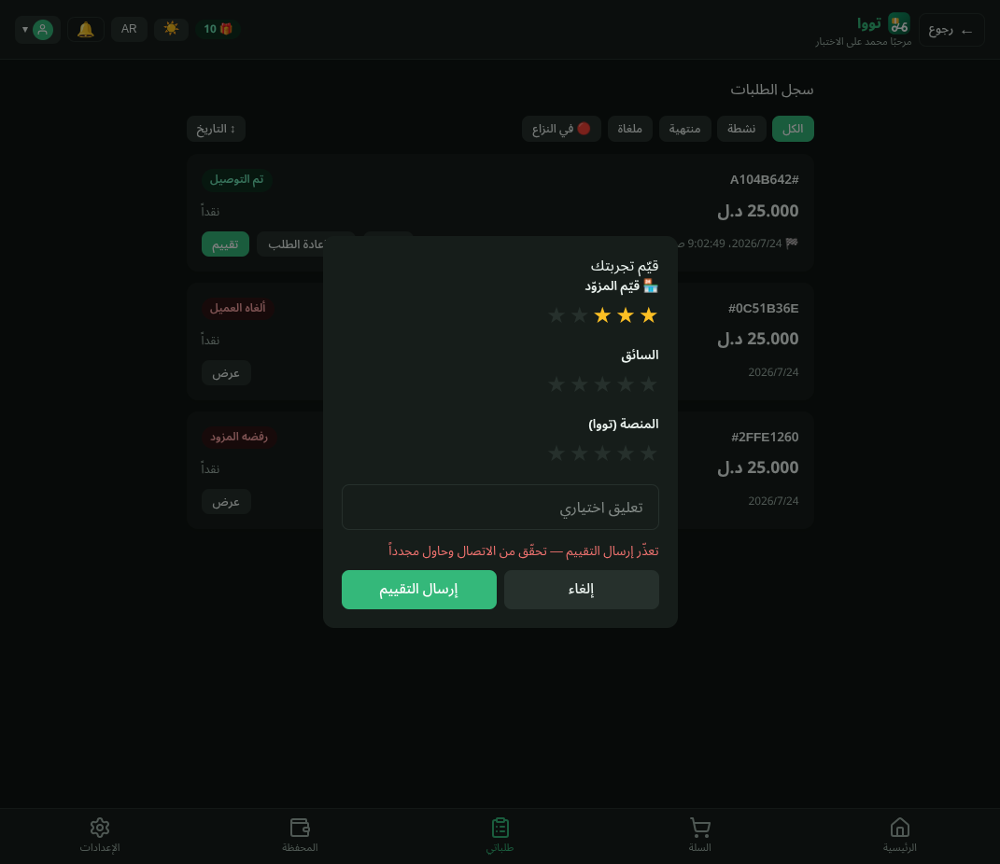
ملفّ NotoSansArabic.woff2 (48,840 بايت) صفريّ المحتوى بالكامل (لا رأس wOF2 صالح إطلاقًا) — تأكَّد ذلك بفحص البايتات مباشرة في مجالَين مستقلَّين. المتصفّح يتراجع لخطّ النظام تلقائيًّا فتبقى النصوص العربيّة مقروءة بصريًّا، لكنّ الخطّ المخصَّص معطَّل فعليًّا على كل صفحة، على الأرجح نتيجة تلف في نسخ/بناء الأصل لا خطأ منطقيّ.
GET /api/orders يعيد total_minor (الأصناف فقط)، بينما المبلغ الحقيقيّ المستحقّ (cash_due_minor) يشمل أيضًا رسوم التوصيل (3,060 درهم في كل الطلبات الأربعة المُختبَرة). صفحة سجلّ الطلبات تعرض الرقم الأوّل (الأقلّ) بتسمية توحي أنّه المبلغ الكاملّ، بينما صفحة تفاصيل الطلب نفسها تعرض الرقم الصحيح. عميل يراجع سجلّه سيجد رقمًا أقلّ من المدفوع فعليًّا في كل مرّة.
عميل أحال صديقًا فرأى في صفحة الولاء "مكافأة 5.000 د.ل" بلون أخضر يوحي بالنجاح — لكن رصيد محفظته الفعليّ بقي 0.000 د.ل بلا أي تفسير لماذا لم يظهر المبلغ.
هذا سلوك مقصود ومُوثَّق على مستوى المنصّة بالكامل: قيد محاسبيّ متوازن حقيقيّ سُجِّل فعلًا (DR PLATFORM_BONUS_EXPENSE 5000 / CR CUSTOMER_WALLET 5000)، لكنّ الصرف الفعليّ للمحفظة معلَّق خلف علم production_payment_enabled المختوم — تمامًا نفس النمط المُتَّبع في الولاء والتسوية والرواتب. المشكلة هنا واجهة لا منطق: صفحة الولاء لا تحمل أي إشارة لهذا الفارق بين "احتُسِبت" و"صُرِفَت"، بينما صفحة المحفظة المجاورة تقول ببساطة "لا توجد عمليّات بعد".
مسائل بصريّة أو إتاحة (accessibility)، لا تُعطِّل أي وظيفة.
جملة تعليمات تثبيت تطبيق الجوّال تُقتَطع في منتصف كلمة عربيّة ثم يُلصَق بها نصّ عربيّ آخر مباشرة دون فاصل، وفي وضع الإنجليزيّة يظهر ذيل عربيّ ملتصق بجملة إنجليزيّة كاملة. المصدر: AppDownloadSection.tsx، جملة داخل t() مقطوعة في منتصف الكلمة يليها نصّ ثابت (hardcoded) خارج نظام الترجمة تمامًا.
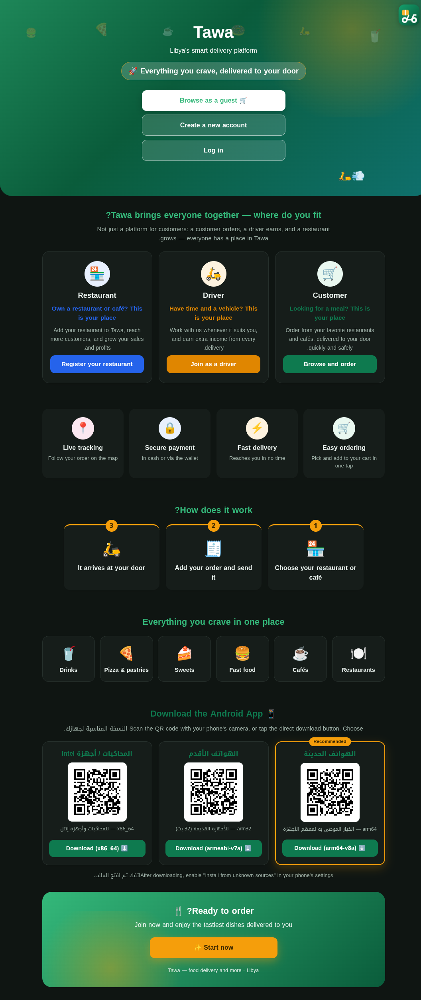
aria-pressed معكوسة على زرّ الوضع الداكن/الفاتحالزرّ الوحيد للتبديل بين الوضعين يحمل aria-pressed={dark} بينما تسمية الزرّ تصف الوضع الآخر دائمًا — يقول لقارئ الشاشة "الوضع الفاتح، مضغوط" أثناء كون التطبيق فعليًّا في الوضع الداكن. لا أثر بصريّ أو وظيفيّ، مسألة إتاحة (accessibility) فقط.
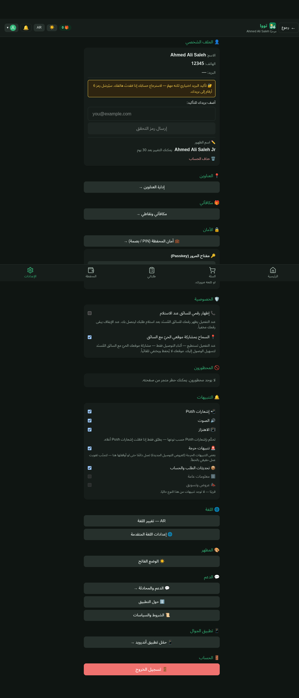
customer_preferences.default_address_id غير مُستخدَم إطلاقًا في الكودميزة "تعيين عنوان افتراضيّ" الفعليّة تعمل عبر addresses.is_default بشكل صحيح تمامًا ومختلف كليًّا. عمود default_address_id يُقرَأ فقط عبر GET /me/preferences ولا يكتبه أي كود — كود ميت غير مؤثِّر، لا عيب مستخدَم حاليًّا.
على شاشة تتبّع طلب بحالة "مرفوض من المزوّد"، تعود الخطوة الأولى ("بانتظار المزوّد") لعرض الرقم "1" بدلًا من علامة الإتمام ✓ رغم أنّ تلك الخطوة اكتملت فعلًا. تجميليّ فقط.
حقل التاريخ/الوقت لجدولة طلب مستقبليّ يستقبل قيمة افتراضيّة بصيغة غير متوقَّعة، ما يُصدِر تحذيرًا واحدًا في console دون أن يمنع إرسال الطلب فعليًّا أو يُسبِّب أي سلوك خاطئ ملحوظ.
حين تظهر نفس المشكلة في مجالات مستقلّة اختبرها وكلاء مختلفون دون تنسيق مسبق بينهم، فذلك دليل على نمط بنيويّ لا حادثة معزولة.
ظهرت مشاكل ترجمة في 10 من أصل 26 نتيجة: خطّ عربيّ تالف (مرّتين مستقلّتين)، رسائل خطأ الخلفيّة تتجاهل لغة الواجهة (43 موضعًا)، أداة الخريطة غير مُترجَمة، كتل كاملة (الشؤون القانونيّة، الإشعارات) بلا ترجمة، ترجمة الصفحة الرئيسيّة مكسورة (مرّتين مستقلّتين)، وخلل منطقيّ في دورة تبديل اللغة نفسها. هذا يستحقّ خطّة معالجة i18n مخصَّصة ومنهجيّة، لا إصلاحات متفرّقة.
زرّ إفراغ السلّة (لا شيء يحدث)، كود الخصم (لا خصم ولا رسالة)، تحويل الإحداثيات لعنوان (404 دون تفسير)، استثناء الدفع النقديّ (الطلب يتجمّد دون أي إشعار) — أربع حالات مستقلّة من نفس الفلسفة: فشل بلا أي إشارة للمستخدم. يستحقّ ذلك مراجعة شاملة لكل نقاط "الفشل الصامت المحتمل" في الكود، لا إصلاح كلّ حالة بمعزل عن الأخرى.
شحن المحفظة، صرف مكافأة الإحالة، والفصل بين الصانع والمُصادِق (maker-checker) لاعتماد رصيد يدويّ — كلّها محكومة بأمان فعليّ عبر علم production_payment_enabled المختوم، وتأكَّدت سلامتها حيًّا (رُفِضت محاولة مصادقة ذاتيّة على رصيد يدويّ بشكل صحيح). المشكلة الوحيدة أنّ واجهة المستخدم لا تشرح له لماذا "احتُسِبت" مكافأته لكن لم "تُصرَف" بعد — فجوة رسائل، لا فجوة أمان.
لوحظ عبر مراقبة الشبكة أنّ تتبّع الطلب يستقصي GET /api/orders/{id} كل ~4 ثوانٍ ورسائل المحادثة كل ~2 ثانية طوال الجلسة، بينما نداء POST /api/sse/ticket يحدث لكن دون أي حركة EventSource حيّة فعليّة تدفع الواجهة. هذا يؤكّد حيًّا مخاوف سابقة وثَّقتها الذاكرة المشروعيّة عن احتمال تعطّل بثّ موقع السائق الحيّ (SSE) بالإنتاج (تقرير 519) — الآن بدليل شبكة مباشر لا استنتاج فقط. يستحقّ قرارًا واضحًا: هل SSE مسار حيّ مخطَّط له فعلًا أم كود خامل يجب إزالته؟
كل بند هنا تحقّقنا منه مباشرة في قاعدة البيانات أو عبر استجابة الشبكة — لا انطباعًا. مطويّة لكل مجال.
/account/locale تُحفَظ فعليًّا على الحساب، وواجهة RTL العربيّة سليمة بصريًّا في كل الصفحات المُختبَرة.localStorage.ليست عيبًا برمجيًّا — لكنّها فجوة توقّعات تستحقّ توضيحًا صريحًا.
الميزة الوحيدة الموجودة فعليًّا تحت اسم "طلب جماعي" هي أن يجمع عميل واحد عدّة سلال من متاجر مختلفة ويدفعها في معاملة واحدة ("ادفع الكلّ — N متاجر") — وهي ميزة حقيقيّة تعمل بشكل ممتاز (مؤكَّدة أعلاه). لكن لا وجود لميزة "عميلان أو أكثر ينضمّون لنفس الطلب عبر رابط مشترَك، كلٌّ يضيف من جهته" — تلك الفكرة غير مبنيّة في الكود إطلاقًا.
اختبرنا الميزة الحقيقيّة الموجودة (تجميع سلال متعدّدة المتاجر لعميل واحد) بدلًا من الميزة متعدّدة المشاركين غير الموجودة، ووثَّقنا الفارق هنا صراحة بدل الافتراض أو اختلاق نتيجة عن ميزة لا وجود لها.
من الأكثر إلحاحًا (يمسّ الثقة والمال) إلى الأقلّ إلحاحًا (تحسينات تجربة).
promotion-quote (منتهٍ / غير مؤهَّل / معطَّل عالميًّا / غير موجود) بدل الكائن الفارغ الموحَّد، وعرض رسالة واضحة للعميل — قبل التفكير في تفعيل promotions_enabled أصلًا (F-01).DriverVehicleProfile.plate_number، أو مزامنته تلقائيًّا من Driver.vehicle_plate عند التسجيل (F-04) — هذا يمنع حاليًّا انضمام أي سائق جديد دون تدخّل يدويّ من OPS./operations/orders/stuck ليشمل الطلبات ذات استثناء نقديّ مفتوح، وإظهار رسالة واضحة للعميل عند حدوث الاستثناء (F-05) — وتصفية طابور الاستثناءات العالقة منذ يونيو كأولويّة تشغيليّة موازية.